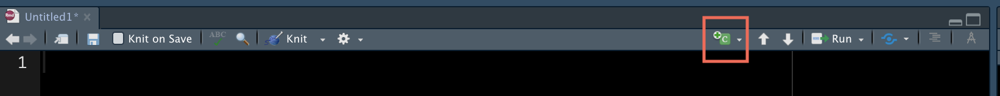
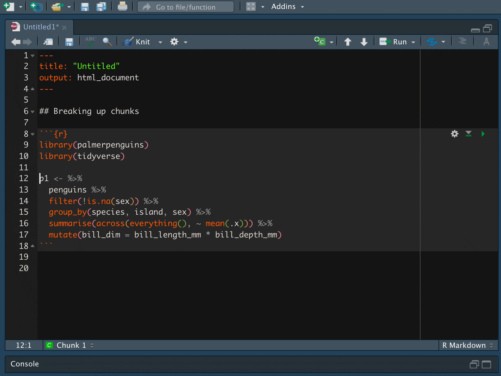
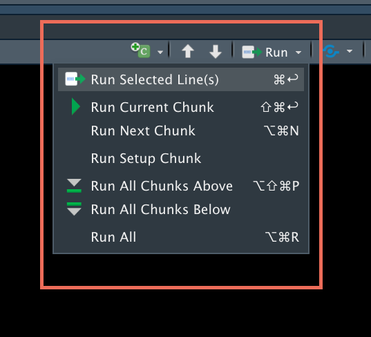
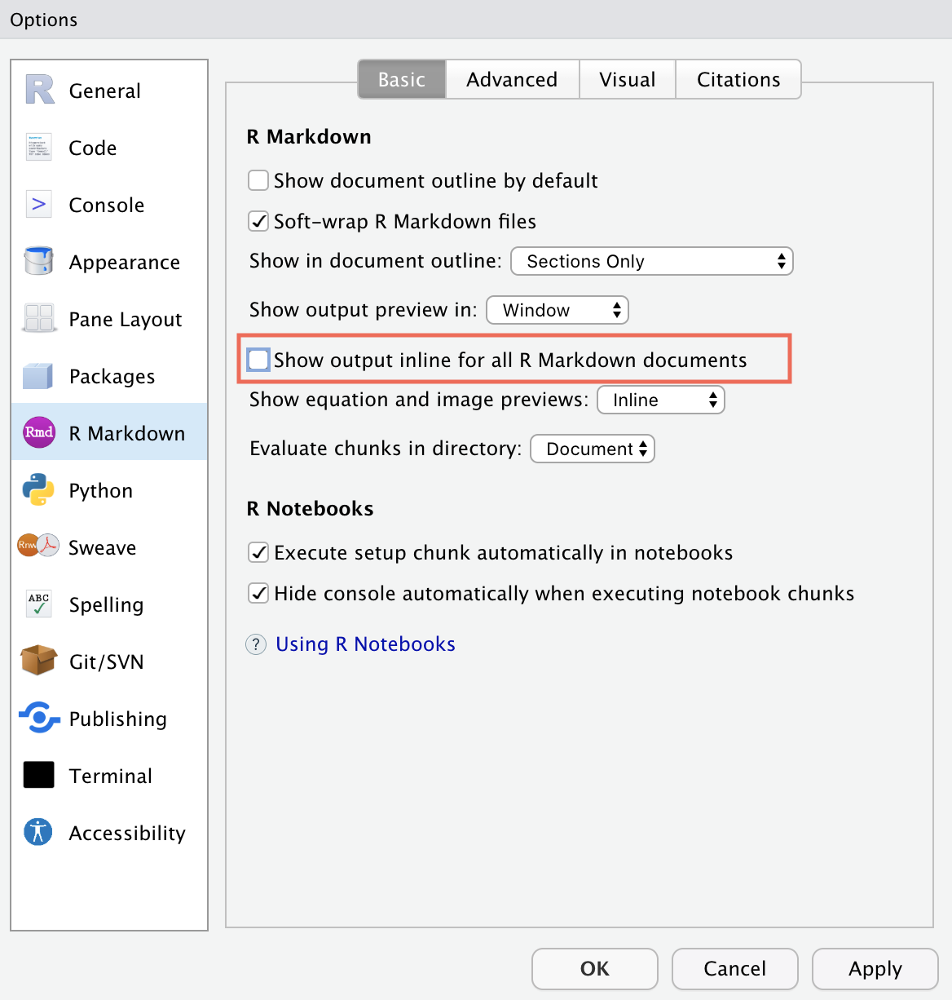
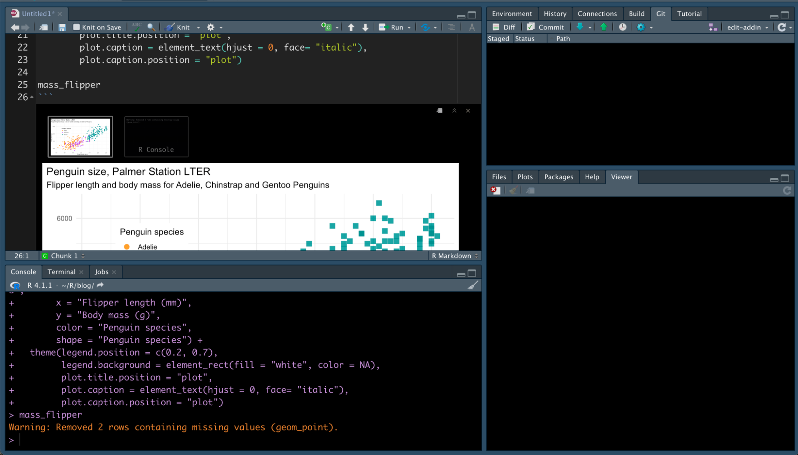
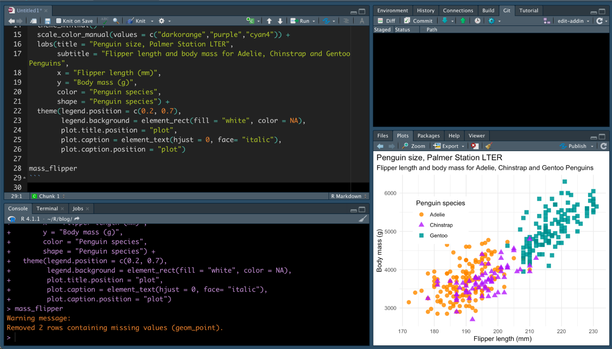
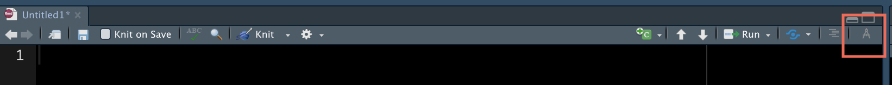
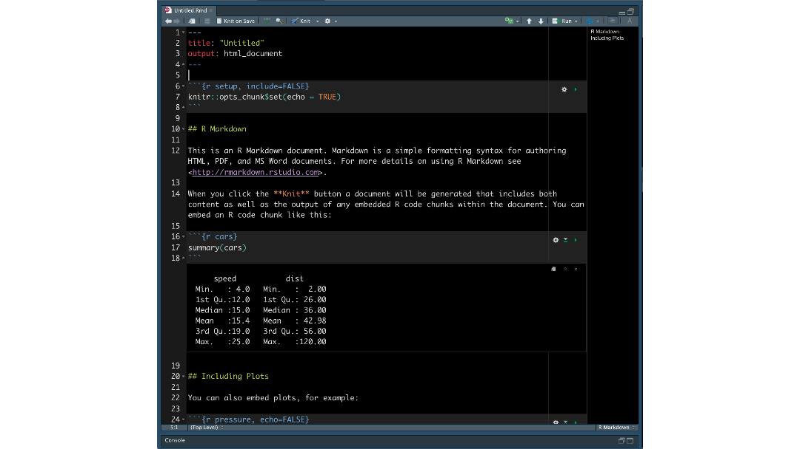

2021-11-22
The R Markdown file format combines R programming and the markdown language to create dynamic, reproducible documents. R Markdown can be used for reports, slide shows, blogs, books — even Shiny apps! With so many possibilities, authors learn how to use their tools in effective ways.
We asked our Twitter friends the tips and tricks that they have picked up along their R Markdown journey. There was a flurry of insightful replies, ranging from organizing files to working with YAML. We wanted to highlight some of the responses so that you can also use them when creating R Markdown documents.
This is the first of a four-part series to help you on your path to R Markdown success, starting with working with R Markdown documents in the RStudio IDE.
1. Create new chunks with shortcuts
We understand the pain of typing out all those backticks to create a new chunk, and it is also error-prone. Instead, insert an R code chunk by clicking the Insert button on the document toolbar.

You can also type the keyboard shortcut Ctrl + Alt + I (Cmd + Option + I on macOS). Use the shortcut inside a chunk to split it into two:

2. Run all (or some) chunks
Within RStudio, the Run button on the right-hand side of the document toolbar opens a drop-down menu. The menu contains handy shortcuts for running code chunks.

For example, you don’t have to run chunks individually. Run all chunks below your cursor by clicking Run All Chunks Below.
3. Show plots in the Viewer pane
By default, code chunks display R Markdown plots “inline”, or directly underneath the code chunk. If you would rather see the plot in the Viewer pane, go to RStudio > Preferences > R Markdown and unselect “Show output inline for all R Markdown documents”.

Voilà! Next time you run the document, the plot will show in the Viewer pane as opposed to inline.
Before…

After…

4. Drag and drop formulas from Wikipedia into your R Markdown document
You can include LaTeX formulas in your R Markdown files. Enclose them between dollar signs ($) to see the rendered formula.
Since Wikipedia uses LaTeX HTML formatting on its website, this means you can highlight formulas and drag them into your R Markdown document.
5. Use the visual markdown editor
RStudio v1.4 has a visual markdown editing mode. This lets you see what your R Markdown document will look like without knitting. You can edit your document in this mode, as well.
Click the compass button on the far-right end of the document toolbar to switch into visual markdown editing mode.

Alternatively, you can use the ⇧+⌘+F4 keyboard shortcut.

Typing ⌘/ finds and inserts what you need into the document:
These are only a few of the many features available in the visual markdown editor. Read more in the RStudio Visual Markdown Editing documentation.
We hope that these tips & tricks help you when you are working with R Markdown documents in the RStudio IDE. Thank you to everybody who shared advice, workflows, and features!
Stay tuned for the second post in this four-part series: Cleaning up your code.